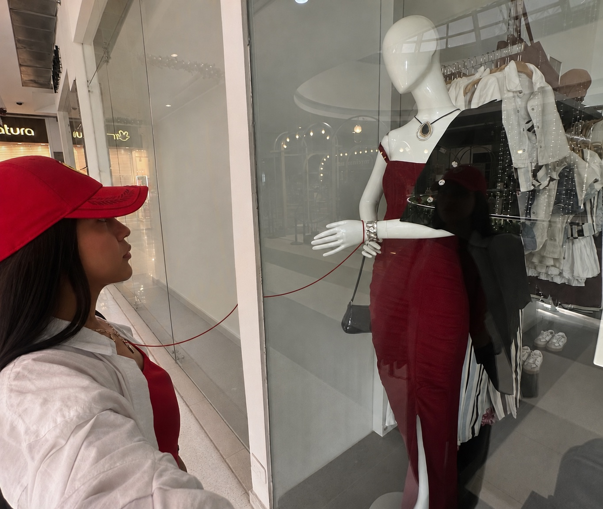
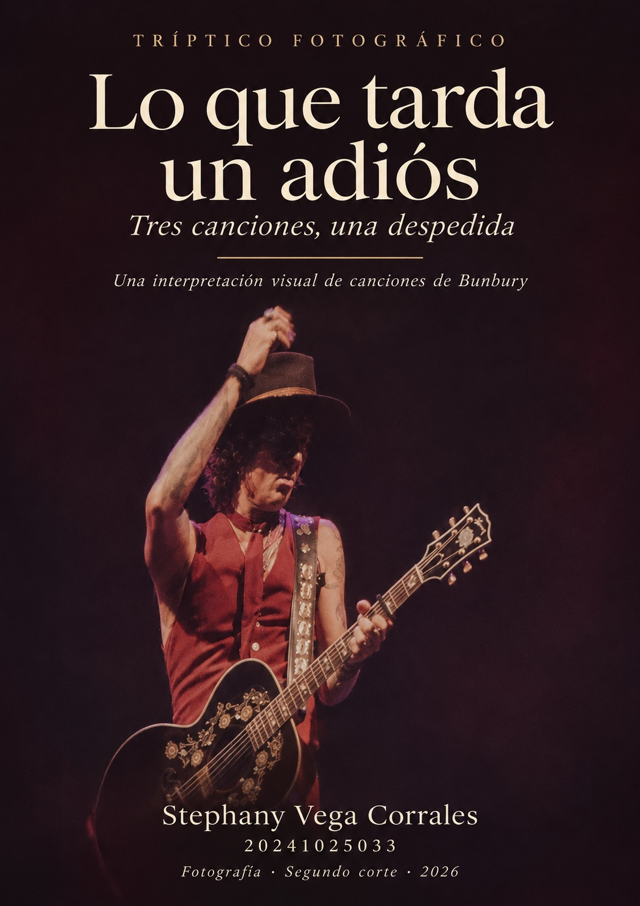
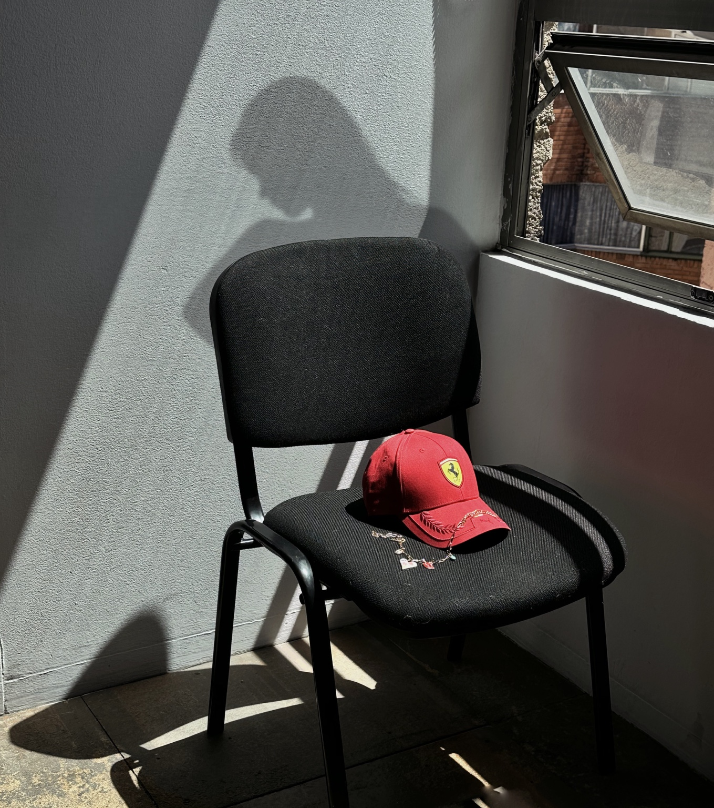

La ilusión / Parecemos tontos
Confundimos la vitrina con una ventana
Hay distancias que parecen pequeñas hasta que intentamos atravesarlas.
Entrar en esta obra
Una historia contada con un vidrio, una silla y un collar. Tres maneras de mirar lo que permanece después de una despedida.
Comenzar el recorridoUna gorra en una silla. Un collar que regresa a la mano. Un reflejo que parece acercarnos a alguien. En esta serie quise darles a los objetos la tarea de contar lo que a veces no sabemos decir.
Las canciones de Bunbury acompañan el recorrido. La mirada hacia los objetos cotidianos dialoga con la poesía visual de Chema Madoz. De ese encuentro nace una despedida propia: primero la ilusión, después la ausencia y, al final, el recuerdo.
Stephany Vega CorralesEntra en cada imagen.
Quédate el tiempo que necesites.

Hay distancias que parecen pequeñas hasta que intentamos atravesarlas.
Entrar en esta obra
La silla está vacía. El lugar, todavía no.
Entrar en esta obra
Lo que cabe en una mano a veces ocupa toda una vida.
Entrar en esta obraMíralas juntas, de izquierda a derecha: una conexión que se imagina, un lugar que se guarda y un abrazo que se recuerda.
Toca una obra para ampliarla.
Stephany Vega Corrales · 2026
Fotografía conceptual en color
Parecemos tontos · Bunbury
Stephany Vega Corrales · 2026
Fotografía conceptual en color
Aunque no sea conmigo · Bunbury
Stephany Vega Corrales · 2026
Fotografía conceptual en color
…Y al final · Bunbury
El collar cambia de lugar.
El recuerdo, de forma.